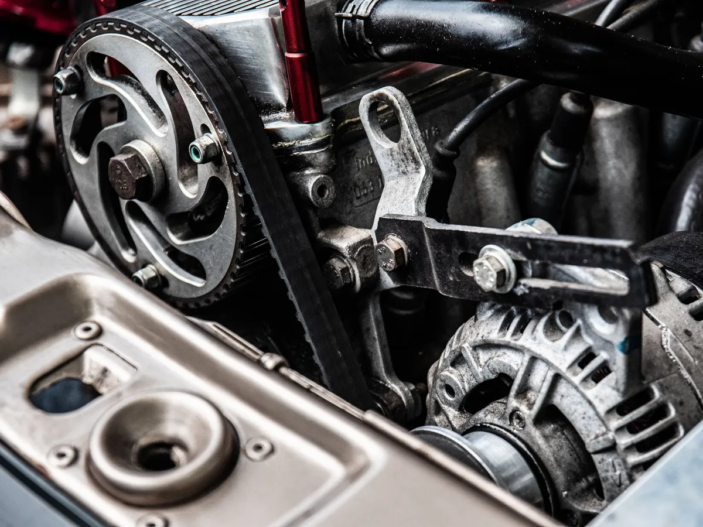

Towed in with a dead battery
"It wasn't the alternator."
A customer's daughter, a single mom, had her car towed in with a dead battery. The tow driver said alternator. Another shop had already quoted just over $500 to replace it.
Eddie didn't take anyone's word for it. He tested it himself. It was the belt tensioner, and it cost far less than an alternator.
Her dad is a mechanic who lives on the East Coast. In his words, it's a relief to know she has someone close by who treats her fair.